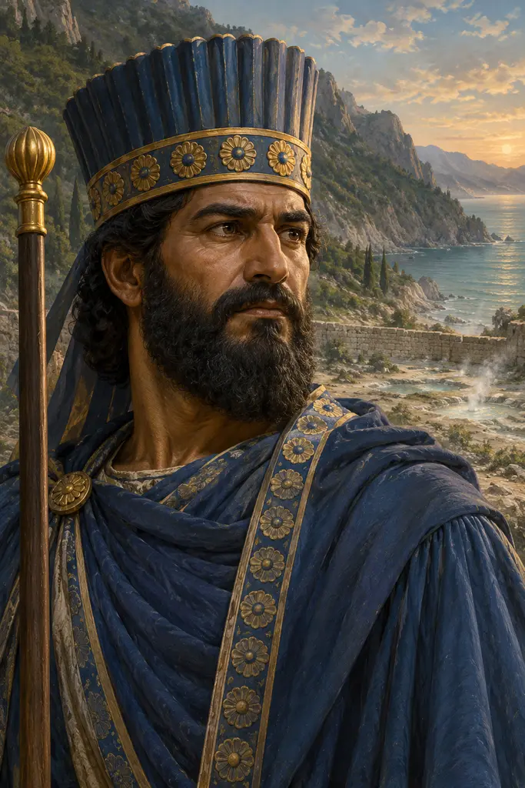
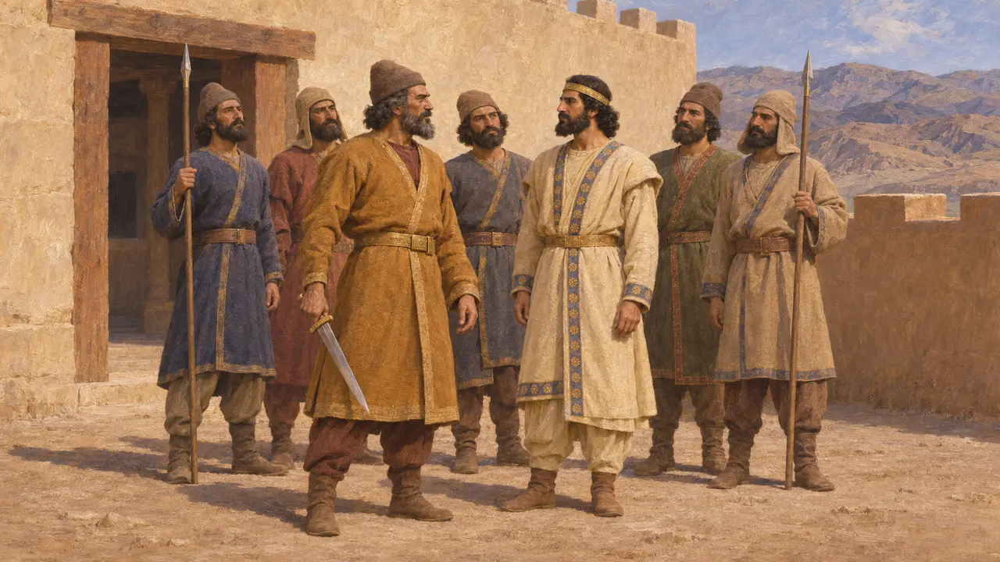
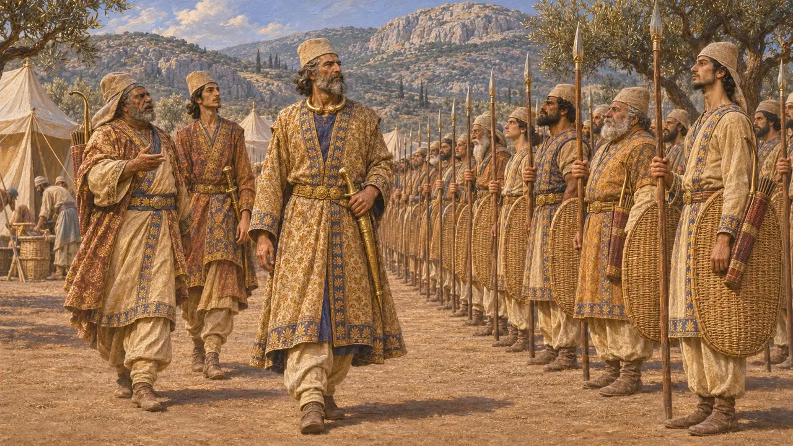
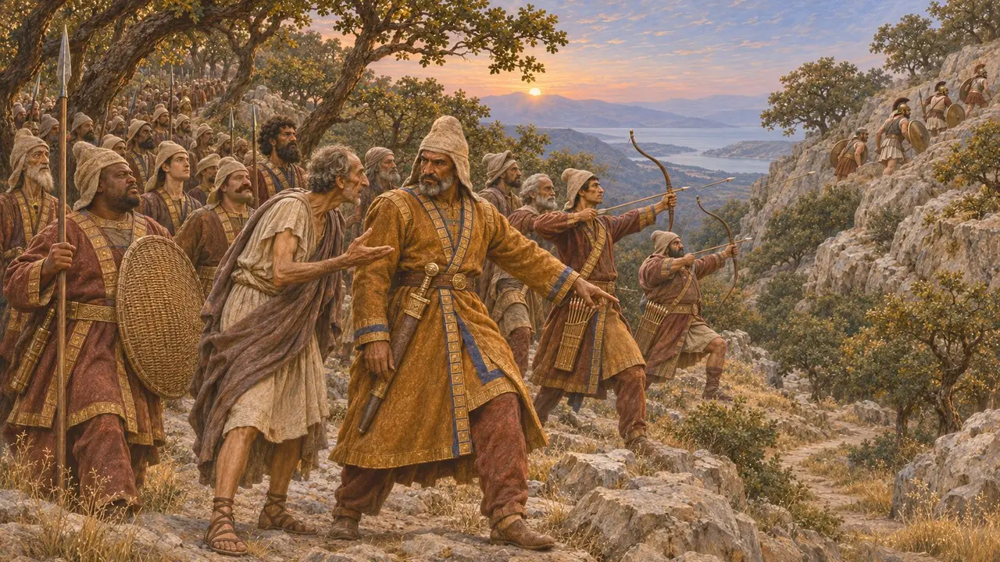
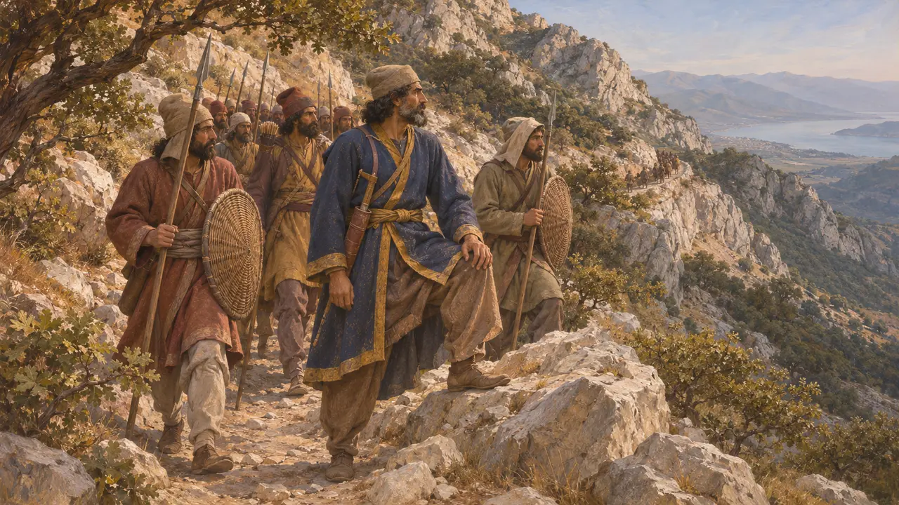
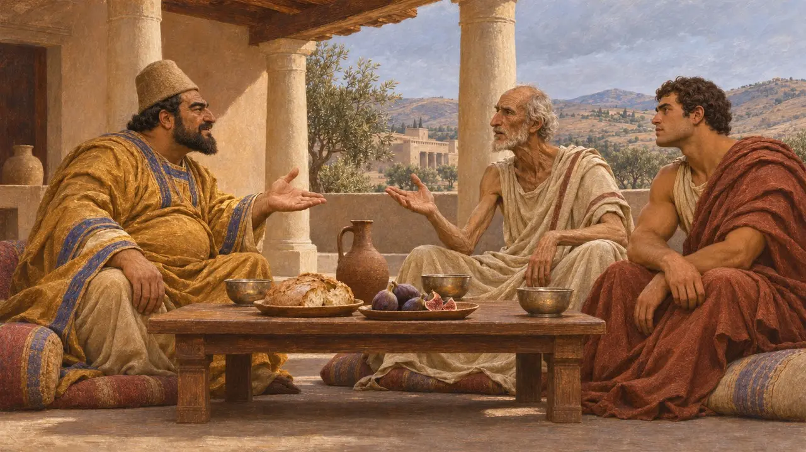

Hydarnès
Général perse, commandant des Immortels aux Thermopyles, 480 av. J.-C.
Dans le jeu : Niveau 3 : Le Mensonge, Niveau 10 : Les Portes chaudes
Hydarnès était le général perse qui commandait les Dix Mille, l'infanterie royale que les Grecs appelaient les Immortels, lors de l'invasion de la Grèce par Xerxès en 480 av. J.-C. Hérodote rapporte qu'il les mena de nuit par le sentier de montagne des Thermopyles et descendit sur les arrières des défenseurs grecs, ce qui décida de la bataille. Il était probablement le fils de l'Hydarnès qui aida Darius à prendre le trône.
Dans le jeu : La chronique du jeu présente Hydarnès comme le commandant qui mena les Immortels par le sentier de montagne pour tourner le défilé, ce qui suit de près Hérodote. L'histoire de la marche de nuit repose sur les seuls récits grecs.

Fils de l'un des six compagnons de Darius
Dans les sourcesL'inscription de Darius à Behistun nomme Vidarna, fils de Bagabigna, un Perse, parmi les six hommes qui se tenaient à ses côtés lorsqu'il tua Gaumata en 522 av. J.-C. Darius envoya aussi Vidarna contre les rebelles mèdes, et Vidarna les combattit à Maru. Hérodote appelle le commandant de 480 av. J.-C. Hydarnès fils d'Hydarnès : le général des Thermopyles était donc probablement le fils de ce compagnon de Darius.
DB §25, §68; Herodotus 7.83

Commandant des Dix Mille
Récit antiqueSelon Hérodote, les Dix Mille étaient des fantassins perses d'élite placés sous les ordres d'Hydarnès. Leur effectif était toujours maintenu au complet : tout homme mort ou malade était aussitôt remplacé, et c'est pour cette raison que les Grecs les appelaient les Immortels. Il précise qu'ils portaient l'équipement le plus somptueux de l'armée. Après Salamine, lorsque Mardonios choisit les troupes qui resteraient en Grèce, Hérodote rapporte qu'Hydarnès refusa de quitter le Roi et repartit avec Xerxès.
Herodotus 7.83, 8.113

La marche de nuit par la montagne
Récit antiqueHérodote rapporte que les Immortels attaquèrent d'abord le défilé et échouèrent, comme les Mèdes avant eux. Xerxès envoya alors Hydarnès et ses hommes à l'heure où l'on allume les lampes, avec Éphialte de Malide pour guide. À l'aube, ils tombèrent sur un millier de Phocidiens qui gardaient le sentier. Hydarnès craignit d'avoir affaire à des Spartiates, mais une fois détrompé, ses hommes les criblèrent de flèches ; les Phocidiens se replièrent vers le sommet, et les Perses poursuivirent leur descente sur les arrières de Léonidas.
Herodotus 7.211, 7.215-218

Ce dont les historiens débattent encore
ContestéLes historiens discutent encore du tracé du sentier de l'Anopée et de la durée de la marche, et beaucoup doutent que les dix mille hommes y soient tous allés, bien qu'Hérodote le laisse entendre. Le nom grec d'Immortels pourrait venir d'un mot perse mal compris, peut-être un terme signifiant « compagnons », mais ce n'est qu'une hypothèse. Hérodote mentionne aussi un Hydarnès comme général des peuples côtiers d'Asie, et l'on ne sait s'il désignait cet homme ou son père.
J. F. Lazenby, The Defence of Greece 490-479 BC, 1993; P. Briant, From Cyrus to Alexander, 2002

Les envoyés spartiates à sa table
Légende tardiveHérodote raconte comment deux Spartiates, Sperthias et Boulis, qui se rendaient auprès du Roi pour expier le meurtre des hérauts de Darius par Sparte, furent reçus par un Perse nommé Hydarnès. Celui-ci les pressa de servir le Roi pour obtenir ainsi le pouvoir en Grèce. Ils lui répondirent qu'il savait ce qu'était l'esclavage, mais n'avait jamais goûté à la liberté. Le récit est conçu pour célébrer la liberté spartiate et ne peut être vérifié.
Herodotus 7.134-136
Sources
- Herodotus 7.83, 7.211-218
- Darius, Behistun inscription (DB §25, §68)
- Herodotus 8.113
- Herodotus 7.134-136
- P. Briant, From Cyrus to Alexander, 2002
- J. F. Lazenby, The Defence of Greece 490-479 BC, 1993